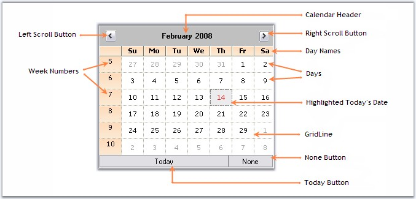

Sections of MonthCalendarAdv control
The following figure displays the sections of MonthCalendarAdv control .

Figure 206: Sections of CalendarAdv
· Calendar Header - Header for the MonthCalendarAdv. See Header Settings.
· Scroll Buttons - Allows the end user to scroll through the months. See Button Settings.
· Week Number - Specifies a unique number for each week.
· Day Names - Day names of each day in a week is displayed in DayNames section.
· Days - Days of the month.
· Highlighted Today's date - Today's date selected / highlighted at runtime.
· Grid Line - Grid Line which separates the dates.
· None Button - Lets you to withdraw focus from a day in the MonthCalendarAdv.
· Today Button - Focus will be moved to today's date.
See Also